液压配件
37 项 · 已选 0 项
液压油泵
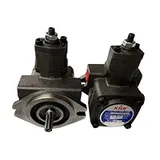
叶片泵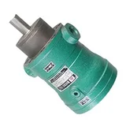
柱塞泵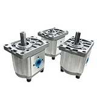
齿轮泵液压油缸
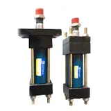
HOB重型油缸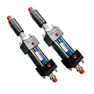
HOB重型可调油缸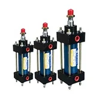
MOB轻型油缸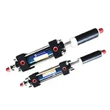
MOB轻型可调油缸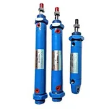
ROB迷你油缸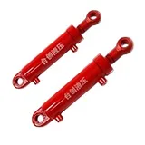
HSG焊接缸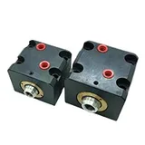
薄型油缸液压电机
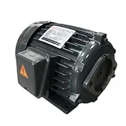
内轴电机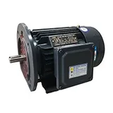
外轴卧式电机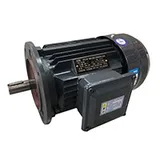
外轴立式电机液压冷却器
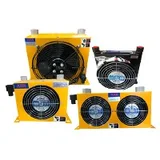
风冷却器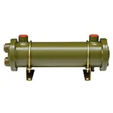
水冷却器ｏｒ系列水冷却器SL系列
液压阀
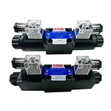
DSG-02系列电磁阀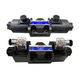
DSG-03系列电磁阀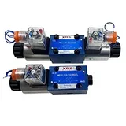
4WE6系列电磁阀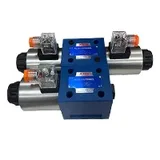
4WE10系列电磁阀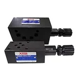
02系列叠加阀03系列叠加阀
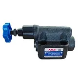
板式溢流阀管式溢流阀
电磁阀线圈
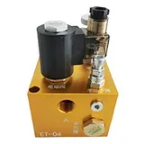
升降阀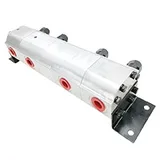
同步阀多路阀
液压附件
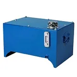
液压油箱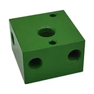
油路块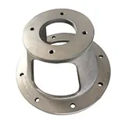
泵套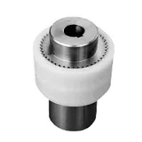
联轴器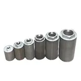
滤网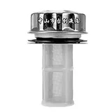
加油口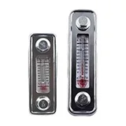
油面计/液位计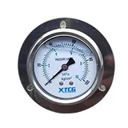
压力表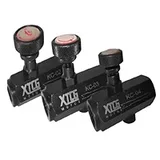
节流阀